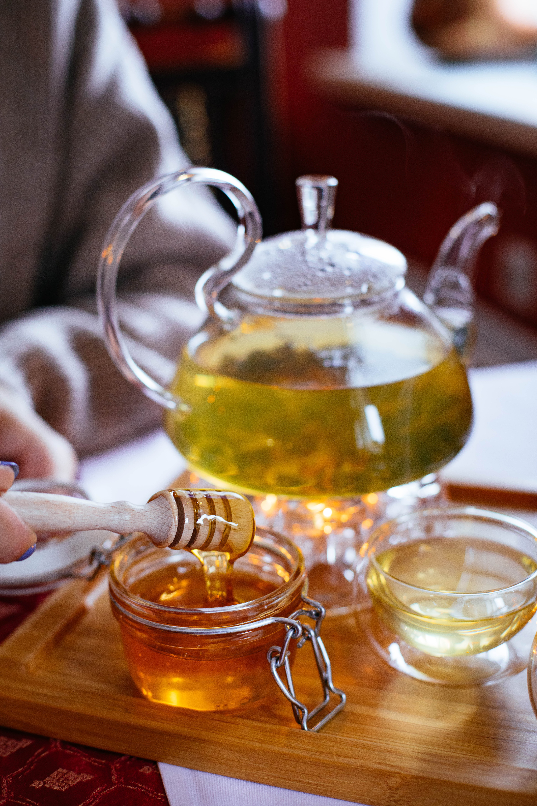

Tea Up Naija is a light and refreshing concoction and a popular drink around the world. It is a healthy drink and can be had anytime of the day. Make and enjoy green tea to rejuvenate your body and mind.
Tea Up Naija is a light and refreshing concoction and a popular drink around the world. It is a healthy drink and can be had anytime of the day. Make and enjoy green tea to rejuvenate your body and mind.
learn more